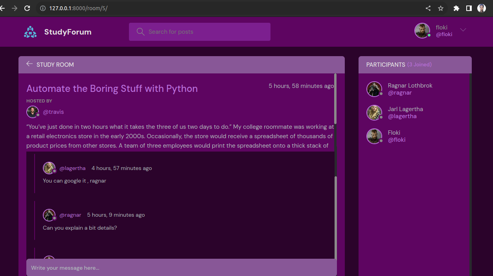
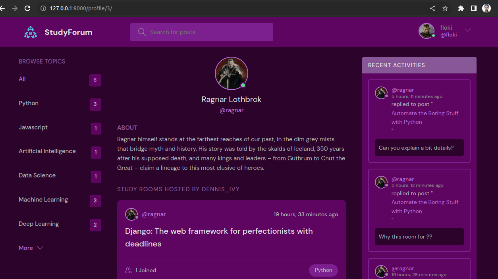
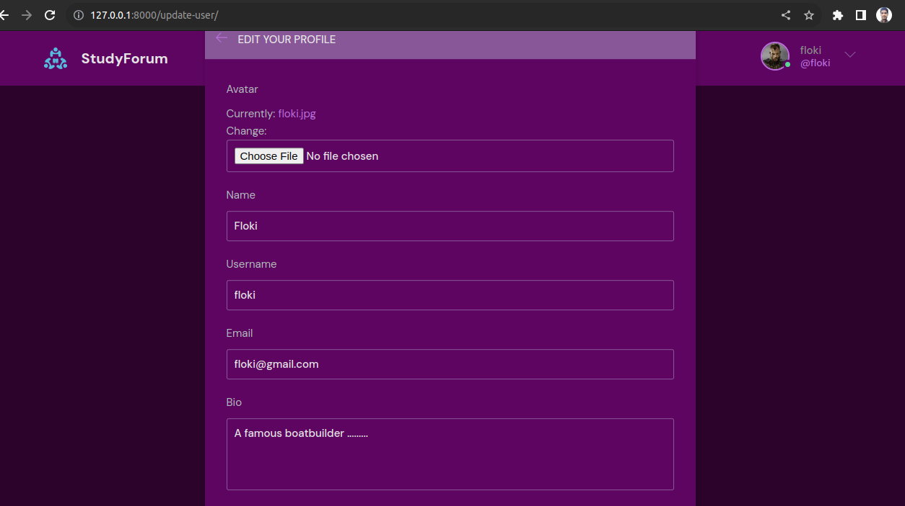
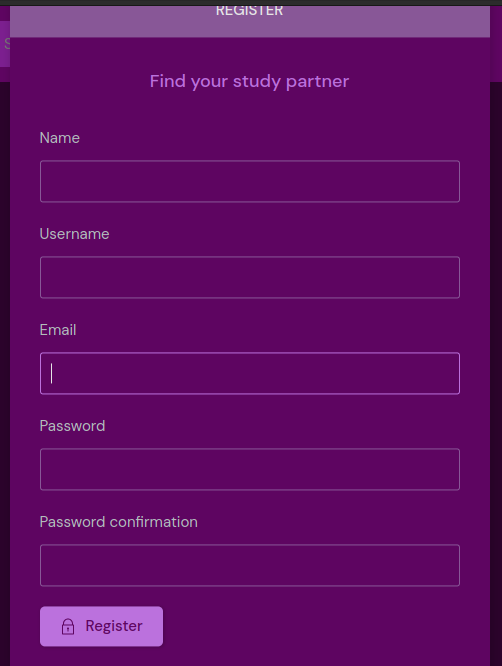

A dynamic online platform that brings students and knowledge seekers together.
With StudyForum, I've created a welcoming space where users can effortlessly create and
join study rooms tailored to their academic interests.
Our robust user authentication and authorization system ensure a secure environment for
open discussions and within each study room. Users can share their expertise, seek
advice, and foster a sense of community—all within the bounds of a strong content
moderation framework.
I've designed StudyForum with user engagement in mind, offering features like user
profiles with customizable avatars, a seamless search function, system to keep users
updated on the latest activity in their chosen study rooms.
I believe in the power of collaboration and the importance of creating a respectful and
inclusive online learning experience.
| Images |
|---|
|
Front Page
|
|

Individual Room
|
|

Profile
|
|

Edit Profile
|
|

Register Page
|
|
Login Page
|